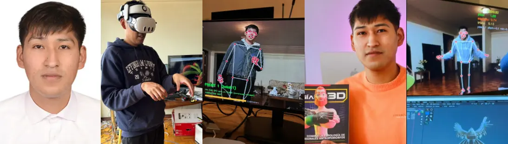
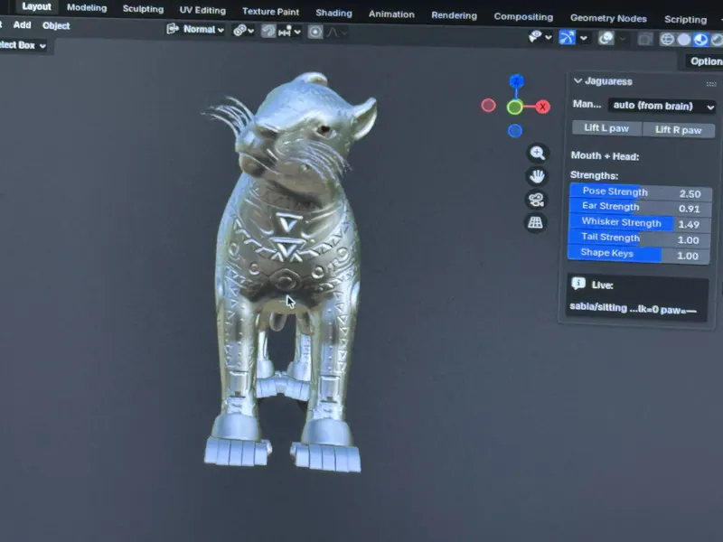
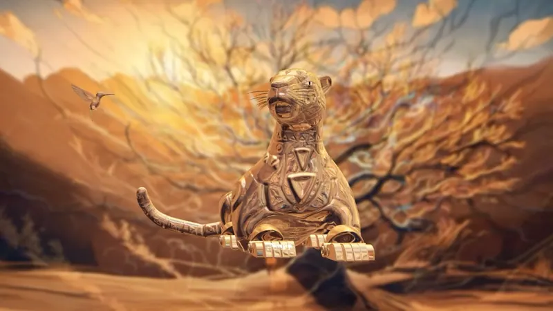
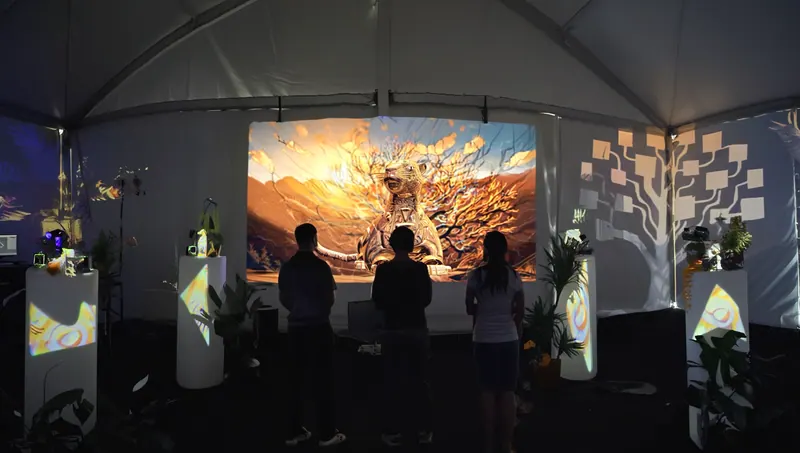
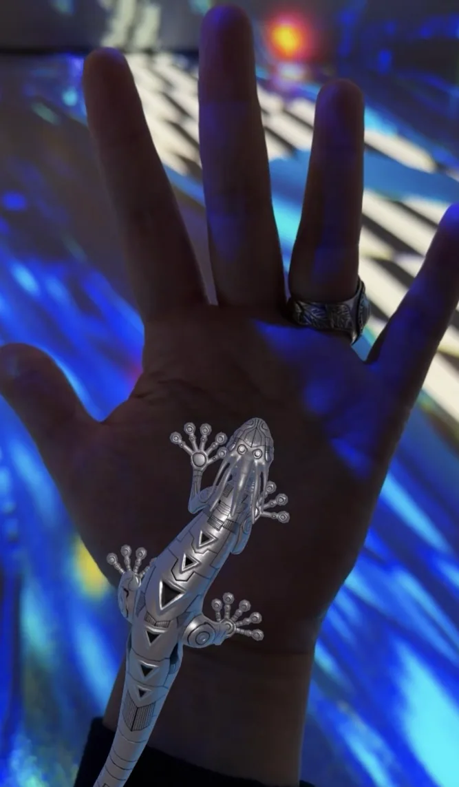

Brian Condori Marza
3D artist and technical collaborator.

Brian Condori Marza is a 3D artist and technical collaborator. He works across modelling, rigging, animation and real-time systems.
He made the 3D animated characters of Las Awichas: eight robotic animals that appear in augmented reality in London and in the hands of visitors.
He is the 3D artist of Huk the Jaguaress. In the lab he builds the rigs and the poses of the creatures.





